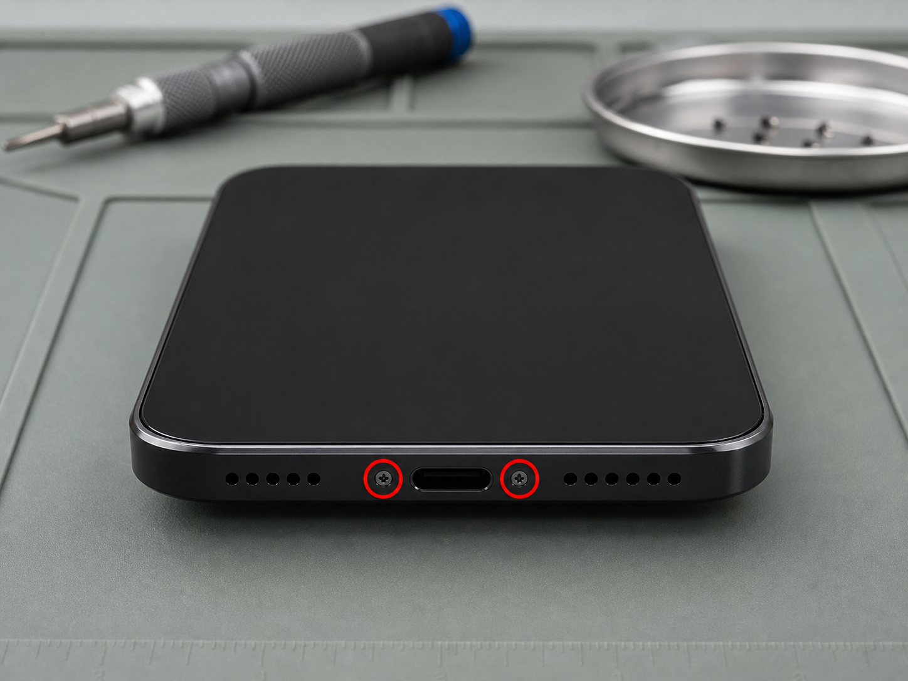
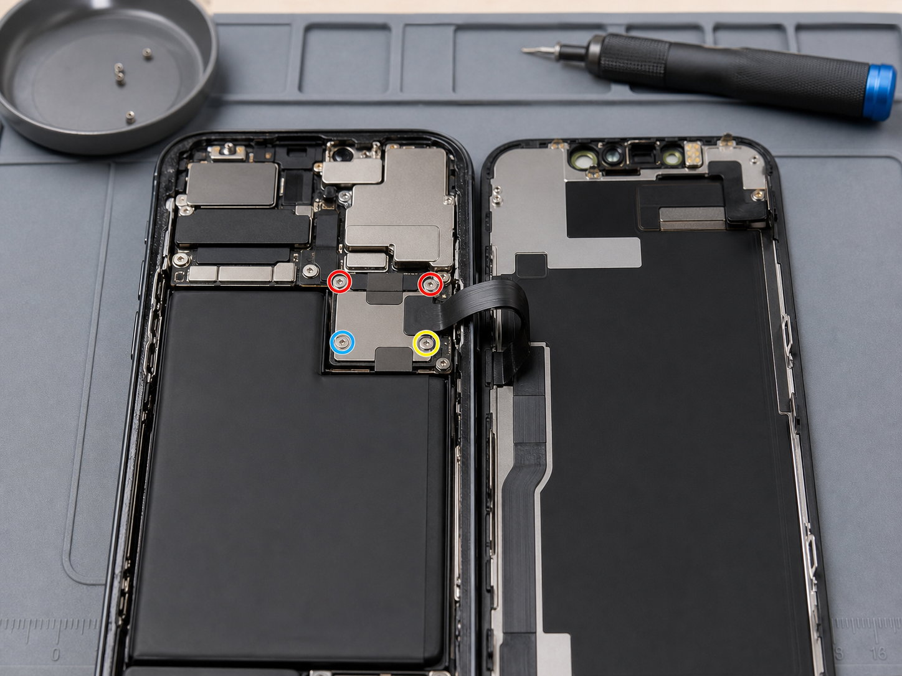
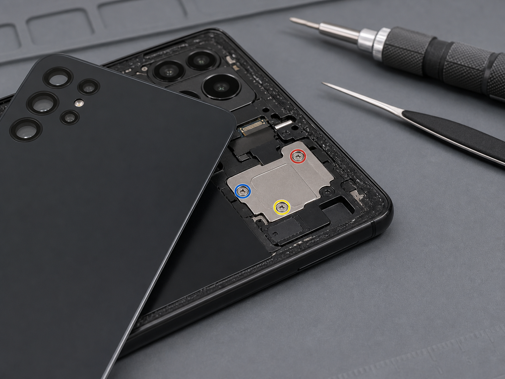

Bottom pentalobe screw photos
Start with model-specific exterior screw locations.
Repair Navigation
Pick your iPhone model and open its screen, battery, or back glass tutorial. Verified tutorials include real repair photos, beginner notes, source links, and exact screw-length tables. Pages without verified data are clearly marked as pending.
Screw Photo Library
Use the dedicated photo index to compare screw markers, bracket locations, and millimeter screw notes before reassembly.

Start with model-specific exterior screw locations.

Find connector covers, markers, and length notes.

Browse rear access photos for newer iPhones.
Verified status means the tutorial has real repair photos and a screw table with millimeter measurements. Pending pages are kept online only as structured placeholders until reliable sources are added.
Repair Safety
Model coverage is based on Apple's official iPhone model identification page. Repair pages use local repair photos and screw measurements when available.